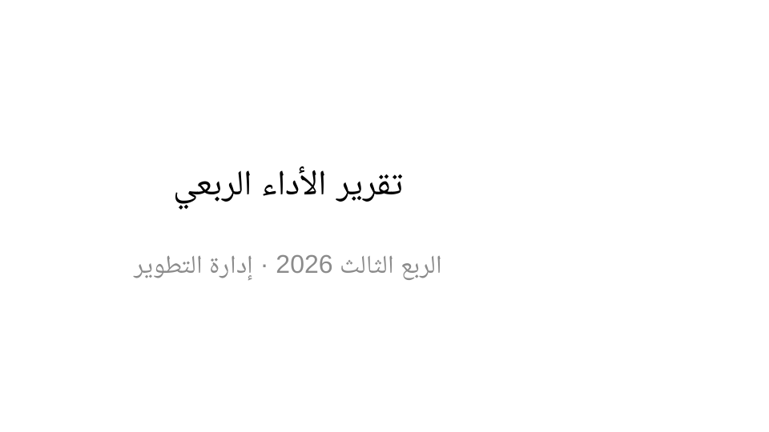
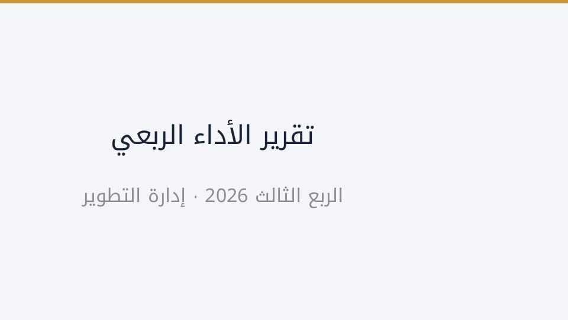
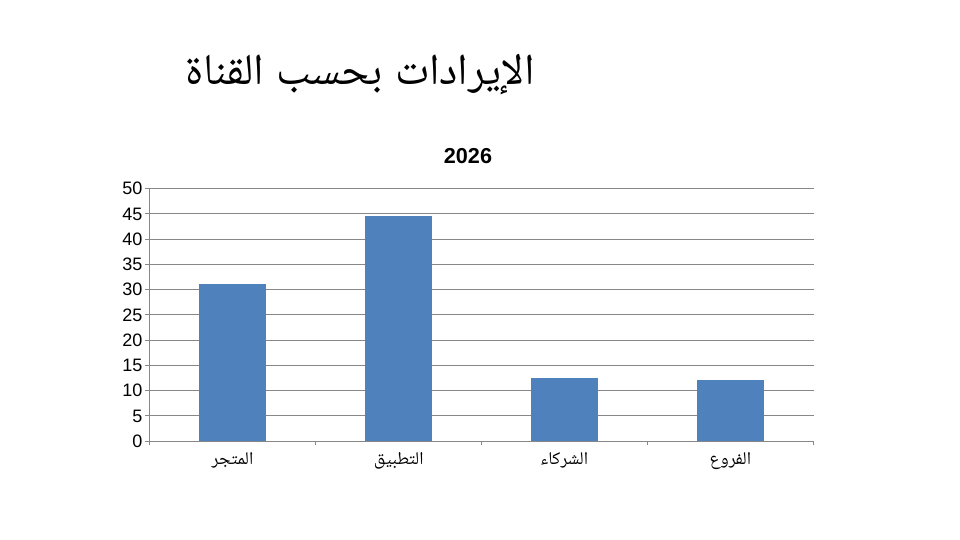
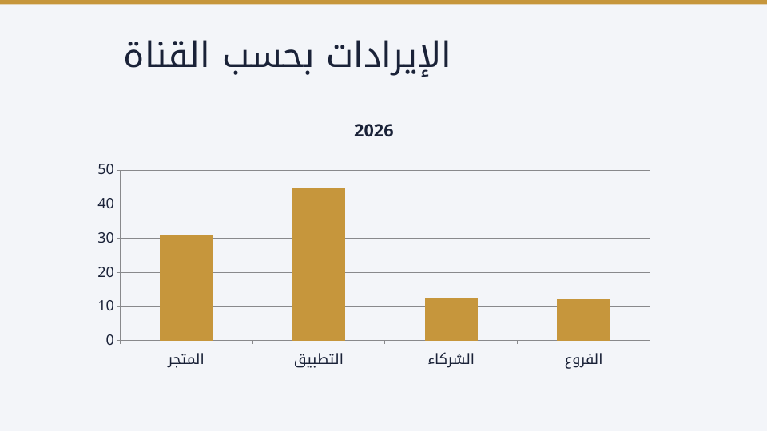
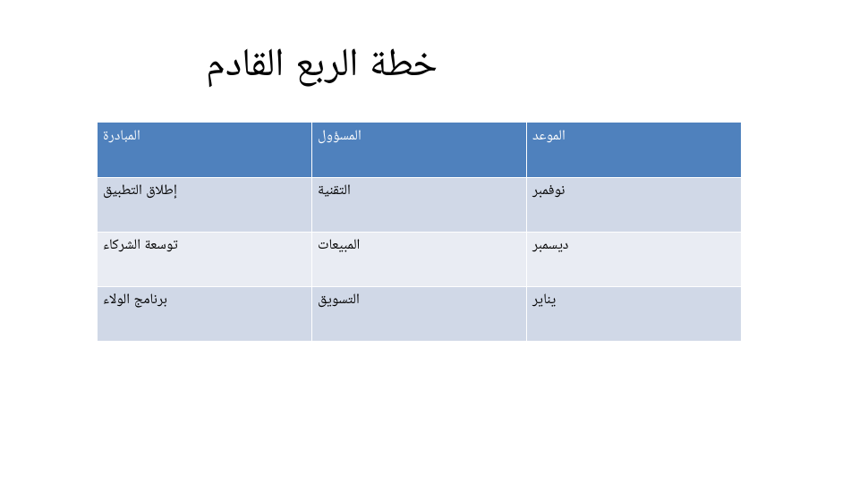
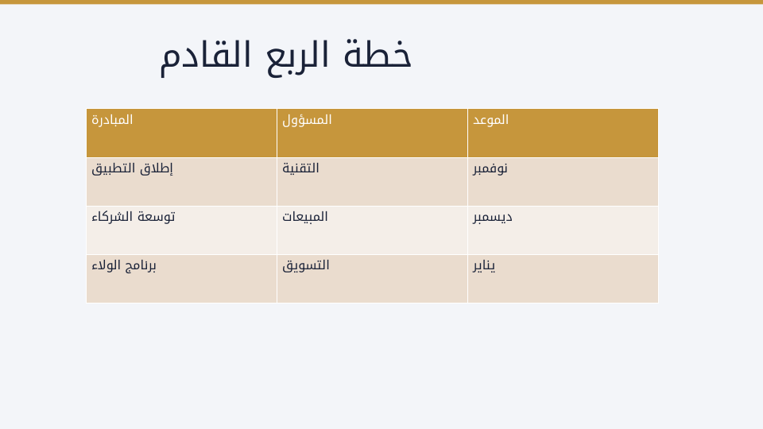

ملف بوربوينت واحد، ثيم جديد، والمحتوى كما هو حرفًا بحرف
نموذج من أربع شرائح: العنوان والنقاط والرسم البياني والجدول. اليمين قبل، واليسار بعد تطبيق لون وشكل محددين.
قبل وبعد






كيف يتم ذلك
- اللون والخط يُكتبان في
ppt/theme/theme1.xml، وهو المكان الذي يقرأ منه بوربوينت «الثيم»، فتتبعه الشرائح الرئيسية والتخطيطات والرسوم والجداول دفعة واحدة. - الشكل يُضبط في الشريحة الرئيسية (الخلفية وشريط اللون وحجم العنوان ولونه)، لا شريحة شريحة، فلا تتزحزح النصوص ولا تتغير مواضع العناصر.
- النص لا يُلمس إطلاقًا: لا إعادة كتابة ولا إعادة ترتيب ولا حذف شريحة.
ما تم التحقق منه فعليًا على هذا الملف
- عدد الشرائح نفسه: أربع قبل وأربع بعد.
- ١٨ نصًا في الملف، متطابقة حرفًا بحرف وبالترتيب نفسه قبل وبعد.
- أرقام الرسم البياني كما هي: 31 و44.5 و12.5 و12.
- ألوان الهوية الاثنا عشر وخطوطها مكتوبة في الثيم، وخطوط أوفيس الأصلية اختفت.
- ملف بلا ثيم يُرفض بدل أن يُنسخ كما هو، وتغيير لون الهوية يُنتج ثيمًا مختلفًا فعلًا.
- الملف الناتج يُفتح ويُعرض بأربع شرائح.
13 تحققًا ناجحًا+ فحص العرض
الملفات
before.pptx · الملف الأصلي after.pptx · بعد تطبيق الثيم
الشرائح والأرقام في النموذج من إنشائي، وليست عمل عميل.